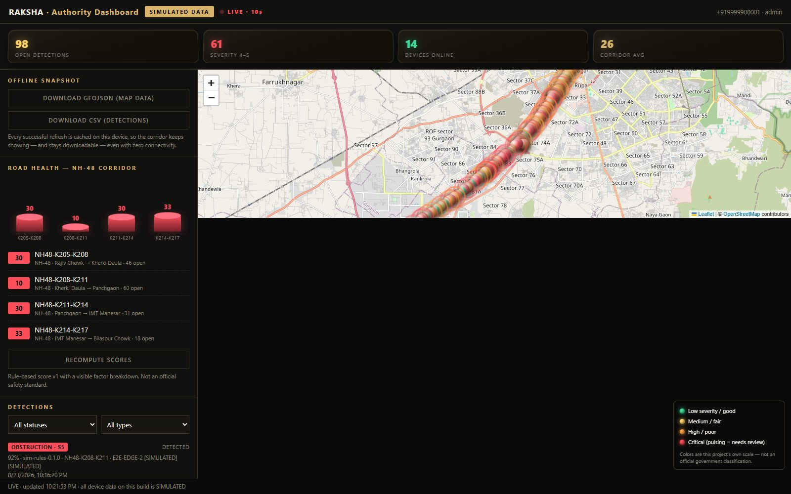
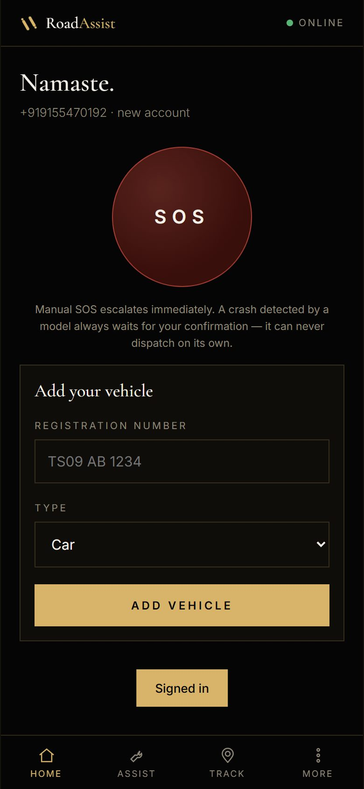
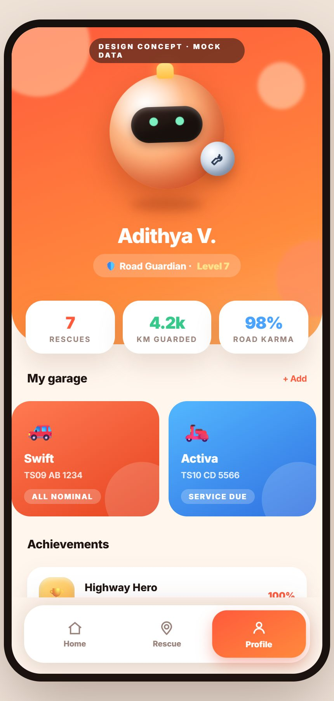

Roadside rescue in milliseconds, autonomous road-damage detection with a genuinely trained model, and a corridor that keeps reporting even when the network dies. All of it is running behind this page — the numbers below are live.
● LIVE — pulled from the running platform every 8 seconds · device data on this build is SIMULATED
Move your pointer over the stack. Each slab lights up as the event travels the real pipeline.
Every number on this page is measured, not asserted — the same pipeline passes 84/84 end-to-end assertions in CI.
Not mockups — screenshots captured from this machine minutes ago. Tilt them.



The dashboard catching a live patrol, surviving a network cut, and the app booking a real rescue.